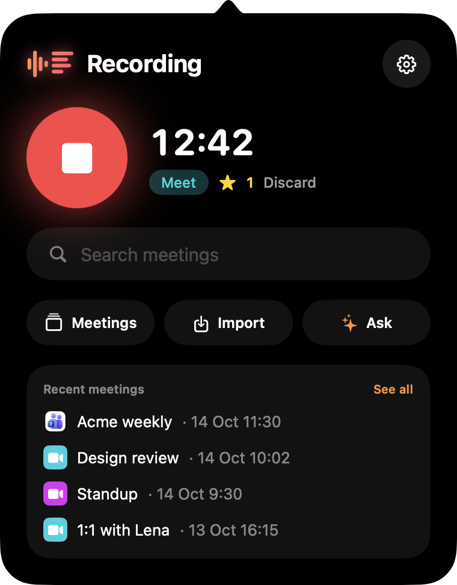

Your meetings, answerable from Claude.
A tiny Mac menu bar app that records your calls, transcribes every word — on your Mac or in the cloud — and lets Claude Code, Claude Desktop or Codex answer from them. No bot joins your call.
Apple Silicon · macOS 14.2+ · MIT license
└ 4 lines in 1 meeting

No bot in your call
Overheard records from your Mac's own audio. Nobody sees a notetaker join the grid, and nothing gets installed in the call.
Answerable from Claude
A built-in MCP server lets Claude Code, Claude Desktop and Codex search your meetings and quote the exact minute.
Yours, free, local if you want
Plain files in ~/Meetings, transcription that can run fully on-device, MIT licensed. No account, no subscription.
See it in action.
Ask your meetings anything.
Every answer comes from your own transcripts, with the meeting, the date and the minute — so you can click and hear it again.
Acme weekly · today — tell the client the launch moved to Friday 02:19
1:1 with Lena · yesterday — send Lena the hiring notes 08:42
Hi all, quick recap: we're moving the launch from Wednesday to Friday so QA can fix two checkout blockers. Marco will share the updated timeline tonight…
Q4 planning · 13 Oct — split between ads and events 06:40
Acme weekly · 14 Oct — launch costs stay on budget 05:12
One click in Settings: Connect to Claude. Actions like starting a recording are off until you allow them.
Who invited the bot?
Nobody. Overheard records the call right from your Mac — system audio through Core Audio process taps, your voice on its own track. No virtual audio driver, no awkward notetaker in the grid.
- Starts on its own when Meet, Teams or Slack grab the microphone — one click for anything else.
- Bookmark moments from any app with ⌃⌥M.
- Survives AirPods connecting mid-call and sample-rate switches.
Recording quietly
from your menu bar
Every word. Every decision.
Speakers and timestamps on every line, then a summary with decisions and action items you can tick off — with the moments you bookmarked.
- Speaker diarization — your own voice is labelled with your name.
- Click any line to hear it again; export sections as .m4a.
- Calendar-aware: meetings get their real title and attendees.
Decisions
· Launch moves from Wednesday to Friday
Action items
Small app. Everything you need.
Starts when the call starts
It notices when a meeting app grabs the mic and starts recording. Or one click, or a URL from your own automations.
Bookmark the moment
From any app, without leaving the call.
Chat inside the app
Ask all your meetings at once, or just one — no terminal needed.
Import anything
Audio, video, YouTube links and podcasts get transcribed too.
Notes where you keep them
PDF, or Markdown with frontmatter for Obsidian, Logseq or Notion.
Cloud or fully local.
Pick where the transcription happens. If audio must never leave the machine, it doesn't.
ElevenLabs Scribe
The best accuracy, in many languages. Bring your own API key; audio is sent only when you choose this engine.
Cohere Transcribe on your GPU
Runs entirely on Apple Silicon with on-device speaker diarization. Nothing leaves your Mac. Needs macOS 15.
Use the AI you already have.
Claude Code, Codex or Apple Intelligence — switch in Settings. No new account, no extra keys.
Everything in ~/Meetings.
Not another notetaker subscription.
| Typical AI notetakers | ||
|---|---|---|
| A bot joins your call | Never | Often |
| Account & subscription | None — free, MIT | Required, monthly |
| Where recordings live | Plain files on your Mac | Their cloud |
| Fully offline transcription | Yes, on Apple Silicon | Rarely |
| Ask from Claude Code or Codex | Built-in MCP server | Rarely |
| Source code | Open, on GitHub | Closed |
Comparing with a specific app? Overheard vs Granola · Overheard vs Meetily
Recording in two minutes.
Download
Grab the .dmg from GitHub Releases and drag Overheard to Applications. Grant mic and audio access on the first call.
Pick transcription
Paste an ElevenLabs key, or choose On this Mac — about 2.5 GB of models, downloaded once (macOS 15).
Connect to Claude
Optional. With Claude Code or Codex installed, click Connect to Claude in Settings. That's it.
Questions, answered.
Is it really free?
Yes — Overheard is MIT licensed with no account and no subscription. ElevenLabs bills you for cloud transcription if you choose it; summaries and chat use the Claude Code or Codex subscription you already have. On-device transcription with Apple Intelligence costs nothing at all.
Do I need Claude?
No. Recording and transcription work on their own. Summaries and chat need Claude Code, Codex or Apple Intelligence; the MCP server is for asking from Claude Code, Claude Desktop or Codex.
Does it work with Zoom, Webex or other apps?
It records anything that plays audio on your Mac. It starts automatically for Meet, Teams and Slack; for other apps, start it with one click or overheard://toggle.
Does it run on Intel Macs?
No — Overheard needs an Apple Silicon Mac with macOS 14.2 or later. On-device transcription needs macOS 15.
Will people know I'm recording?
No bot joins, so they won't see it — tell them. Recording people may require their consent depending on where you and they are, and you're responsible for following the laws that apply to you.
Where is my data, and can I delete it?
Everything lives in ~/Meetings, one folder per meeting, as plain WAV and Markdown files. Delete a folder and it's gone; old meetings can also move to the Trash automatically after 7–365 days.
Never take meeting notes again.
Overheard is free and open source for macOS.
Apple Silicon · macOS 14.2 or later · on-device transcription needs macOS 15